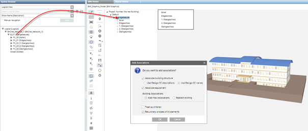

Automatically Assign Associations
- Automatic associations are based on the existing BIM data and engineered system data for the devices. The text must be discussed in advance with the individual parties since the object names are derived from different sources. Possible property extensions or the use of a standard in BIM objects improves automatic association.
NOTE: BIM texts can only be supplied in one language.
- Click Toggle objects tree display
 .
. - The BIM hierarchy structure is displayed in the BIM Viewer tab.
- In System Browser, select the Manual navigation check box.
- In the System Browser, select Logical View.
- Select Logical > [Network name] > [Building name].
NOTE: It can also be associated from the Management View (e.g. for SiPass). - Drag the object folder to the BIM hierarchy structure.

- The Add associations dialog box displays. Details on the options are explained in the table Add options to Associations dialog box.

- In the Add new associations dialog box, do the following:
In the Existing Associations field, select either Add new associations or Replace existing.
b. In the Use for Associations field, enter Descriptions and Names.
c. Clear check box Treat as children.
d. Select check box Recursively process child elements. - Click OK.
- The associations are created and are displayed with symbol
 and bold face text. All unassociated objects must be manually edited in the next step. No associations can be made on inconsistencies between BIM data and project data.
and bold face text. All unassociated objects must be manually edited in the next step. No associations can be made on inconsistencies between BIM data and project data. - Click Save
 .
.